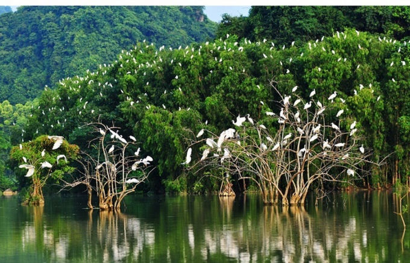
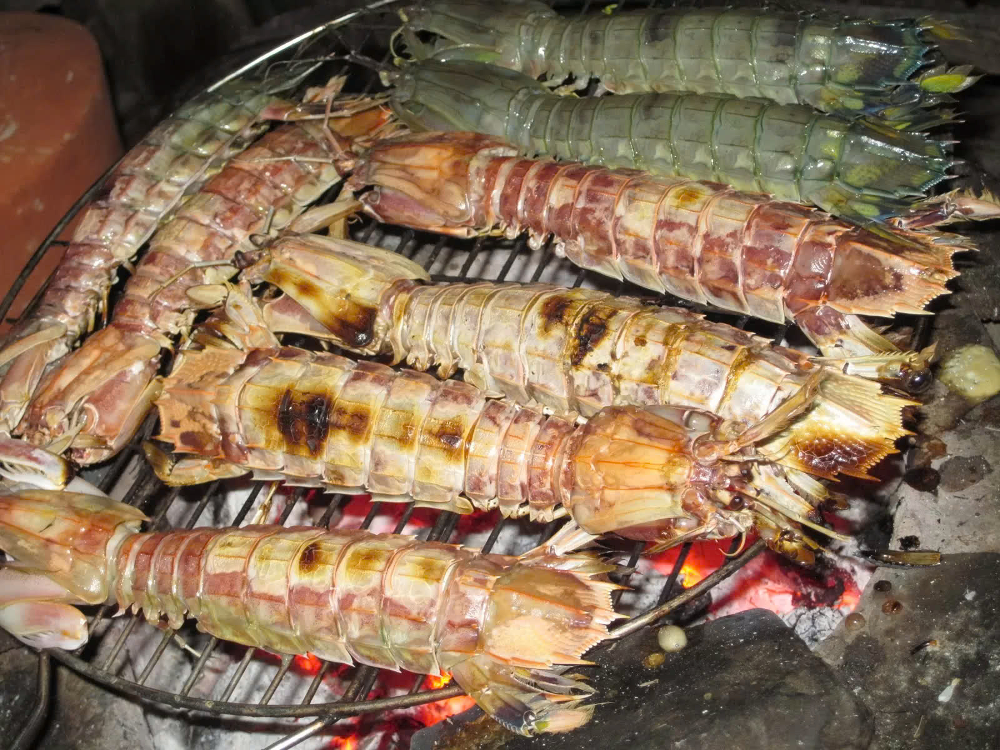

Mũi Cà Mau
Mũi Cà Mau là điểm cực Nam của Việt Nam, nơi duy nhất trên đất liền nước ta có thể nhìn thấy mặt trời mọc từ biển Đông và lặn xuống biển Tây. Đây là một địa điểm có giá trị cả về tự nhiên lẫn văn hóa, gắn liền với lịch sử phát triển của dân tộc Việt Nam. Đến đây, bạn sẽ cảm nhận được sự thiêng liêng của Tổ quốc, đồng thời khám phá vẻ đẹp hoang sơ của thiên nhiên nơi đất Mũi.
Điểm nổi bật:
- Ngắm bình minh và hoàng hôn từ biển Đông và biển Tây.
- Tham quan Cột mốc tọa độ GPS 0001 - biểu tượng thiêng liêng của Tổ quốc.
- Khu rừng ngập mặn và các hệ sinh thái phong phú. 

Thức ăn đặc trưng:
- Bún nước lèo Cà Mau - một món ăn đậm đà với hương vị mắm và hải sản tươi.
- Hàu nướng mỡ hành tại các nhà hàng hải sản ven biển.
- Đặc sản cua Cà Mau - cua biển nổi tiếng tươi ngon.

Vườn Quốc Gia U Minh Hạ
Vườn Quốc Gia U Minh Hạ là một khu rừng ngập mặn lớn và nổi tiếng của Việt Nam. Nơi đây bảo tồn nhiều loài động thực vật quý hiếm, đặc biệt là hệ sinh thái rừng tràm đặc thù. Du khách có thể tham quan bằng xuồng máy, chiêm ngưỡng cảnh quan hùng vĩ, và tìm hiểu về đời sống của các loài động vật hoang dã.
Điểm nổi bật:
- Khám phá rừng tràm, hệ sinh thái rừng ngập mặn với thảm thực vật phong phú.
- Đi xuồng tham quan qua các kênh rạch trong rừng.
- Chụp ảnh với nhiều loài chim quý và động vật hoang dã.

Thức ăn đặc trưng:
- Cá lóc nướng trui - món ăn dân dã đặc trưng của vùng U Minh, thưởng thức cùng muối ớt và rau rừng.
- Mật ong rừng U Minh - đặc sản thiên nhiên được thu hoạch từ hoa tràm.
- Chuột đồng chiên giòn - một món ăn đặc sản của miền Tây.
Hòn Đá Bạc
Hòn Đá Bạc là một quần thể đảo đá đẹp mắt nằm ngoài khơi cách đất liền khoảng 50 km. Hòn đảo này nổi tiếng với những khối đá tự nhiên có hình thù độc đáo và hấp dẫn. Ngoài ra, đây còn là địa điểm lịch sử nổi bật khi gắn liền với sự kiện Chiến dịch CM12, một dấu ấn quan trọng trong thời kỳ chiến tranh chống Mỹ cứu nước của dân tộc.
Điểm nổi bật:
- Chiêm ngưỡng các khối đá hình thù độc đáo như giếng Tiên, bàn chân Tiên.
- Tham quan khu di tích Chiến dịch CM12 lịch sử.
- Tắm biển và câu cá tại các vùng nước xung quanh đảo.
Thức ăn đặc trưng:
- Tôm tít nướng - món hải sản ngon miệng và đậm vị biển. 
- Lẩu mắm cá kèo - một món ăn đậm đà đặc trưng của vùng Cà Mau.
- Ốc len xào dừa - món ốc béo ngậy hòa quyện với nước cốt dừa thơm ngon.